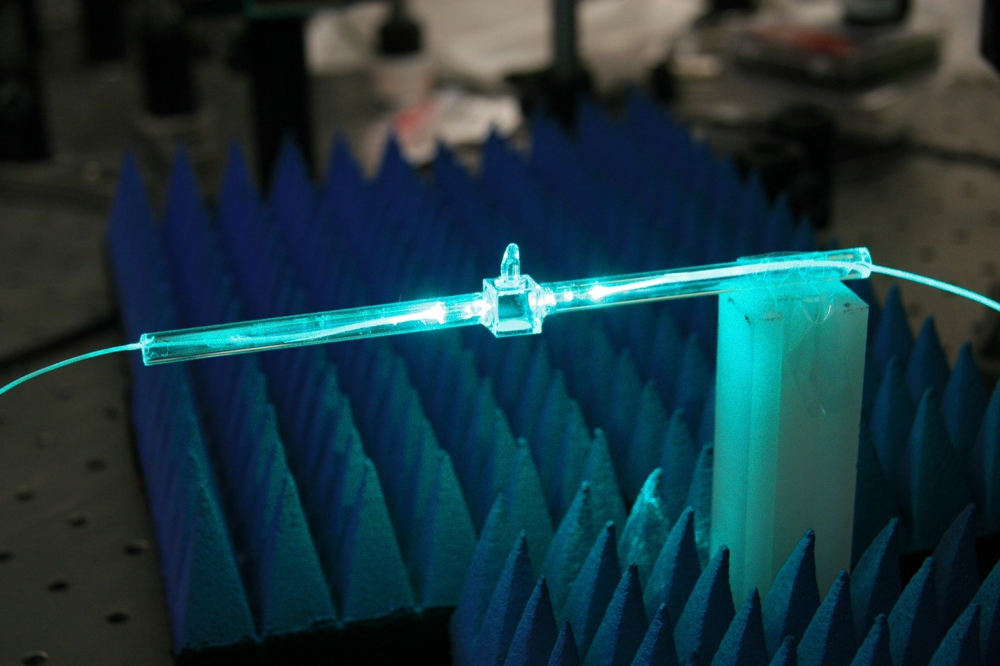

Atomic species & fill conditions
Discuss atomic species and buffer gas requirements for your application.
OAQ Technologies / Atomic Vapor Cell
Choose from our standard range,
or discuss a cell tailored to your experiment.

Standard Products
Explore individual models and specifications to find the right cell.
Layout preview only. These three placeholders do not represent the number or types of available models. Confirmed products and specifications will be added later.
If you know the model you need, please include it in your inquiry.
External vapor-cell research photograph. OAQ model photos and dimensions will be added separately; this image does not identify a model offered for sale.
OAQ Technologies / Atomic Vapor Cell
Atomic vapor cells
Precision experiments begin with the right cell.
OAQ fabricates atomic vapor cells for atomic sensor research and development. We discuss atomic species, cell dimensions, and gas conditions to define a configuration for your experiment.
Provided individually after specifications and quantities are reviewed.
Request a cell quote ↓View key specifications ↓Overview
Atomic vapor cells are core components in sensor experiments that use the interaction of atoms and light. Drawing on our fabrication experience, we help review the conditions required for sensor development.
Discuss atomic species and buffer gas requirements for your application.
Review cell dimensions and geometry against the optical path and available mounting space.
Our atomic magnetometer development experience informs discussions of operating conditions and cell requirements.
Specifications
The values below are fabrication and design examples from existing development materials. They are not guaranteed specifications for standard commercial models. Final supply terms are confirmed in the quotation.
| Parameter | Recorded in existing materials | To be agreed when ordering |
|---|---|---|
| Atomic species | ⁸⁷Rb, Cs | Atomic species and isotope requirements |
| Cell geometry | Cubic glass cell fabrication records | Geometry, optical path, and mounting conditions |
| Cell size | 5 mm cubic cell development example | External dimensions, internal space, and tolerances |
| Wall thickness | 0.75 mm design record | Optical and mechanical requirements |
| Buffer gas | Recorded use of N₂ | Gas type and fill conditions |
| Example fill pressure | Rb: N₂ 550 Torr / Cs: N₂ 250 Torr | Agreed individually, including reference temperature and tolerances |
| Optical quality & coatings | Commercial specifications not yet confirmed | Transmission, materials, and coating requirements |
| Operating temperature | Guaranteed range to be confirmed for each product | Operating conditions and heating method to be discussed |
| Pricing & lead time | Individual quotation | Based on specifications, quantity, and requested schedule |
Reference: OAQ atomic magnetometer development materials, compiled October 19, 2026. Separate records should not be combined into a single commercial model specification.
Configuration
Tell us the atomic species, cell size, optical path, and gas conditions you need. If specifications are not yet defined, start with the purpose of your experiment.
We review fabrication feasibility and identify any conditions that need further confirmation.
Pricing, lead time, inspection, and documentation are discussed against the agreed specifications and quantity.
The photographs in this preview are external references, not OAQ models offered for sale. Tell us the cell specifications you need; availability and supply terms will be confirmed individually.
Start with your application, the system that will house the cell, and the quantity you need. Unresolved requirements can be reviewed in a technical discussion.
Request a quote
Request a quote for standard cells or custom fabrication. You can leave undecided specifications blank and start with your application.
This is a design review prototype. Entries are neither sent to a server nor saved. A submission channel will be connected for the live site.
Technical Resources
Explore the specifications and review items available on this page.
View details ↓DOCUMENT REQUESTTell us which drawings, specifications, or inspection records you need. Available documentation will be confirmed individually.
Documentation & quote inquiry ↗Download files are not provided for items without an approved public datasheet.